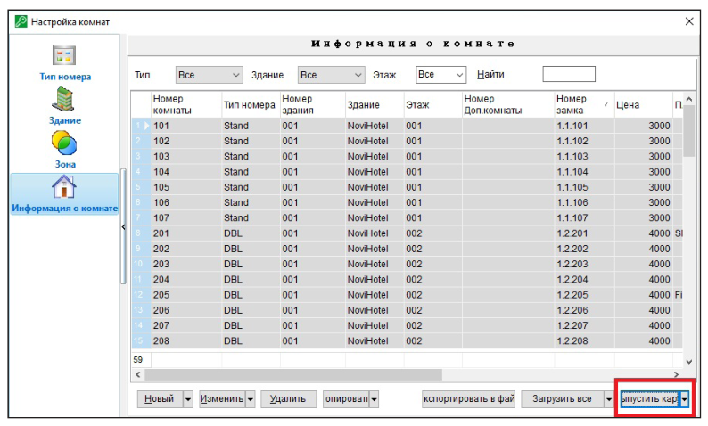
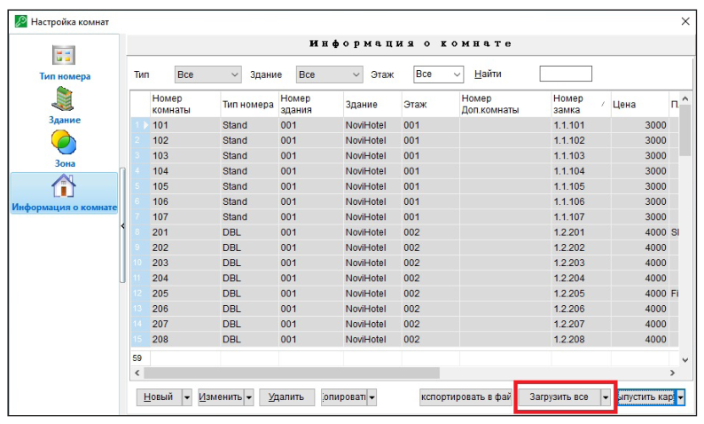
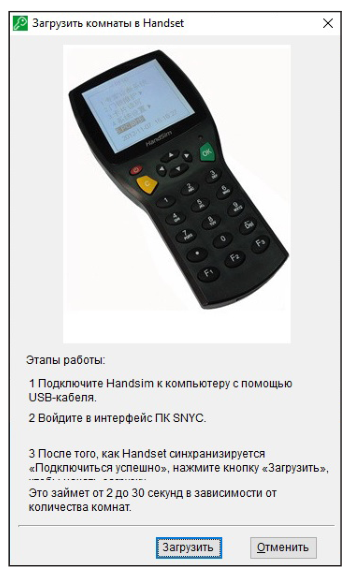

Программирование замков
Руководство пользователя · Электронные замки Novilock™ Classic Slim

ПРОГРАММИРОВАНИЕ ЗАМКОВ
Программирование замков картой Откройте меню Управление номерами, далее нажмите Информация о комнате, положите карту на энкодер, выберите номер и нажмите кнопку Выпустить карту для получения карты создания номера (Установочная карта). Поднесите карту авторизации к замку, дождитесь трех коротких сигналов и одного длинного. После этого светодиод замка начнет гореть постоянным разрешающим цветом (зеленый или голубой – зависит от модели замка). Замок находится в режиме программирования. Поднесите карту создания номера Установочная карта к считывателю замка, чтобы ввести в него информацию о номере. Поле окончания программирования всех замков рекомендуется провести синхронизацию времени во всех замках (Рис. 35).


Программирование замков программатором замков (Handset) Подключите программатор замков к компьютеру, для этого в меню программатора выберите пункт PC authorization и нажмите ОК. Нажмите в программе CTRL + A (Выбрать все) для выбора всех номеров и для загрузки их в программатор, затем нажмите Загрузить в Handsim, дождитесь звукового сигнала для завершения. Отключите программатор от компьютера. Выберите на программаторе режим 2. Lock Maintenance – Installation. Поднесите карту авторизации к замку, дождитесь трех коротких сигналов и одного длинного. После этого светодиод замка начнет гореть постоянным разрешающим цветом (зеленый или голубой – зависит от модели замка). Замок находится в режиме программирования. Стрелками навигации вверх и вниз на программаторе выберите необходимый номер, нажмите OK (SET). Поднесите программатор к замку для переноса информации о номере с него в замок (Рис. 36 и Рис. 37).